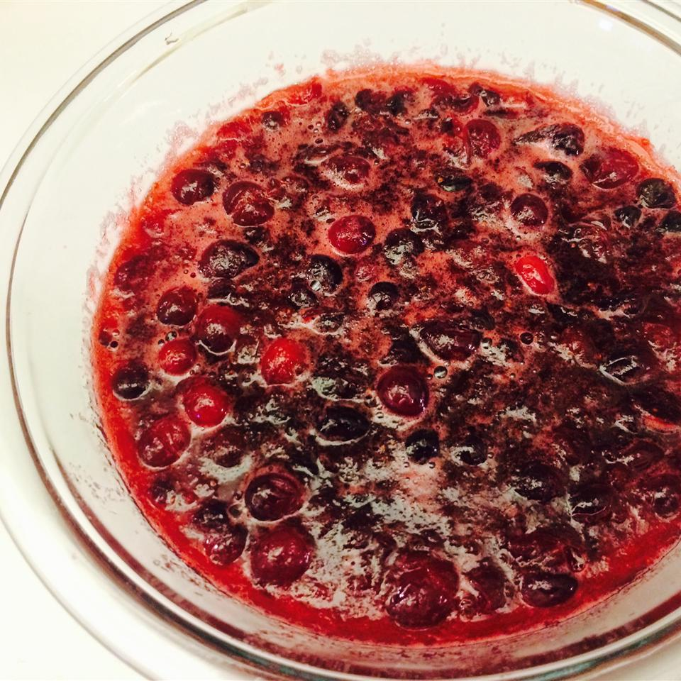

In a medium saucepan over medium heat, dissolve the sugar in the orange juice.
Stir in the cranberries, and cook until they start to pop (about 10 minutes).
Remove from heat, and transfer to a bowl. Cranberry sauce will thicken as it cools.
That's it, bon appetit!
Return to main page